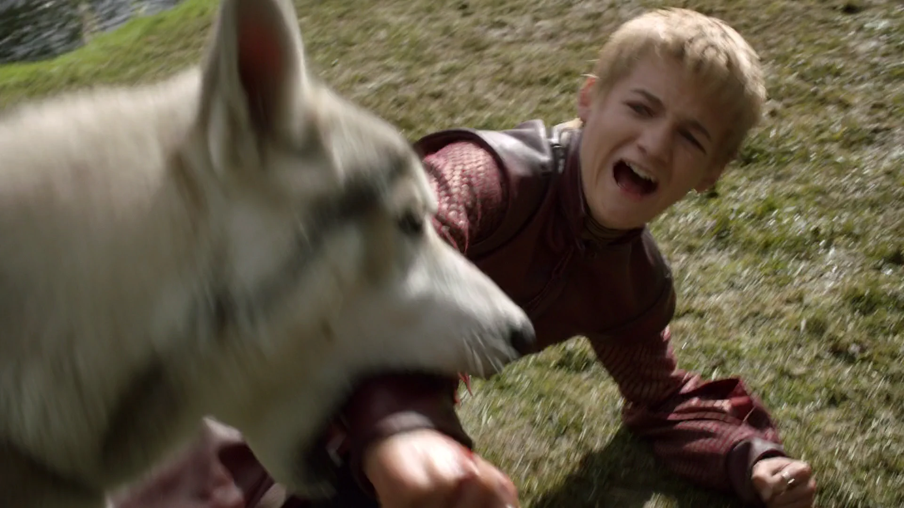

1ª TEMPORADA
Nymeria é a loba gigante de Arya Stark, tem esse nome em referência à rainha dos Roinares, ainda no primeiro ano - na ocasião, a jovem libertou o animal para salvá-la dos Lannister.
Foi solta na mata pela jovem, arya a libertou para ela sobreviver. Após seis temporadas desaparecida, vários indícios apontam para o retorno da segunda loba restante

O reencontro
Outra evidência da volta de Nymeria foi a confirmação de que, de fato, a sétima temporada terá mais de um lobo. No especial de capa da revista Time, uma das matérias fala na presença de "lobos" no roteiro - assim mesmo, no plural. Na trama, alguns detalhes também favorecem para que o reencontro entre a sobrevivente Stark e sua loba aconteça nesse momento. Arya finalmente voltou a Westeros depois de passar um bom tempo fora do continente. Ainda que Westeros seja um continente muito grande, na última vez que a jovem apareceu na série ela estava consumando sua vingança contra Walder Frey (David Bradley) nas Terras Fluviais - onde ela viu Nymeria pela última vez.
Ainda que essa sucessão de coincidências não seja suficiente para garantir certeza absoluta do retorno de Nymeria, vale pensar no que exatamente a presença da loba agregaria à trama nesse momento. Nos livros, o animal é citado em algumas ocasiões por outros personagens, compartilhando rumores de uma alcateia enorme caminhava pelas Terras Fluviais sob a liderança de uma loba de tamanho assustador, matando inimigos Stark. Nymeria, assim como Arya, esteve sozinha durante muito tempo e, caso volte, as duas estarão muito mais perigosas e ameaçadoras do que no momento que se despediram.